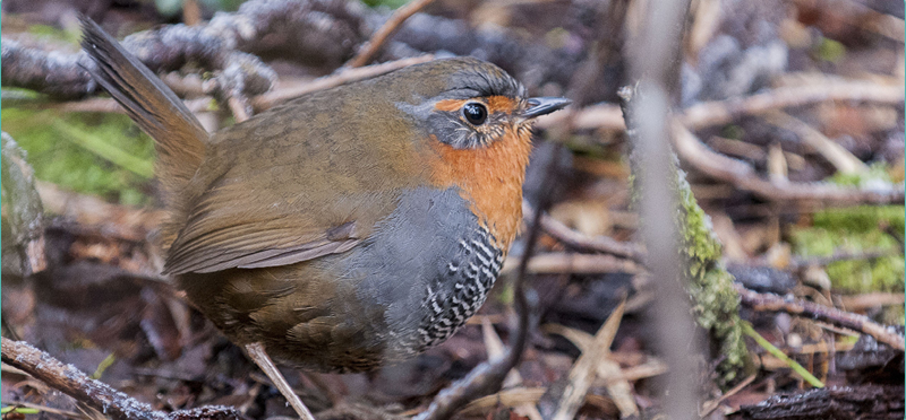
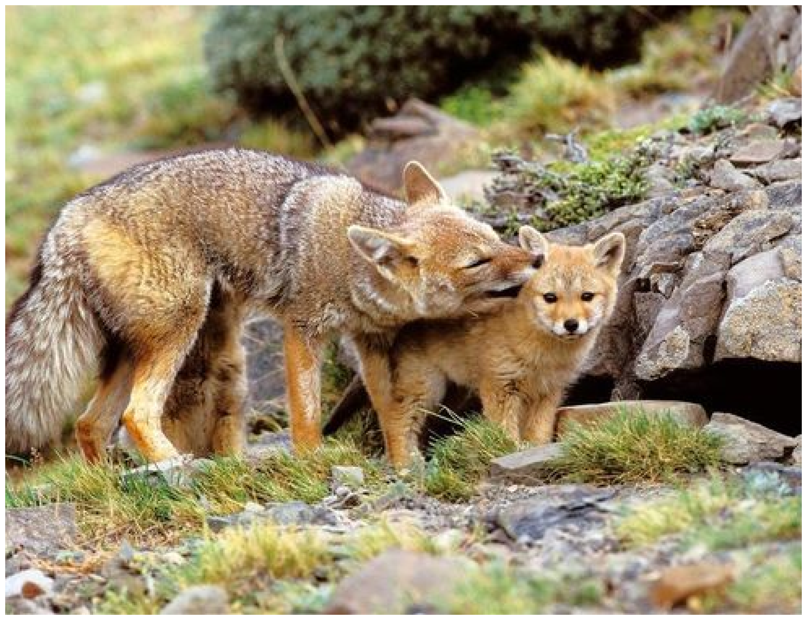
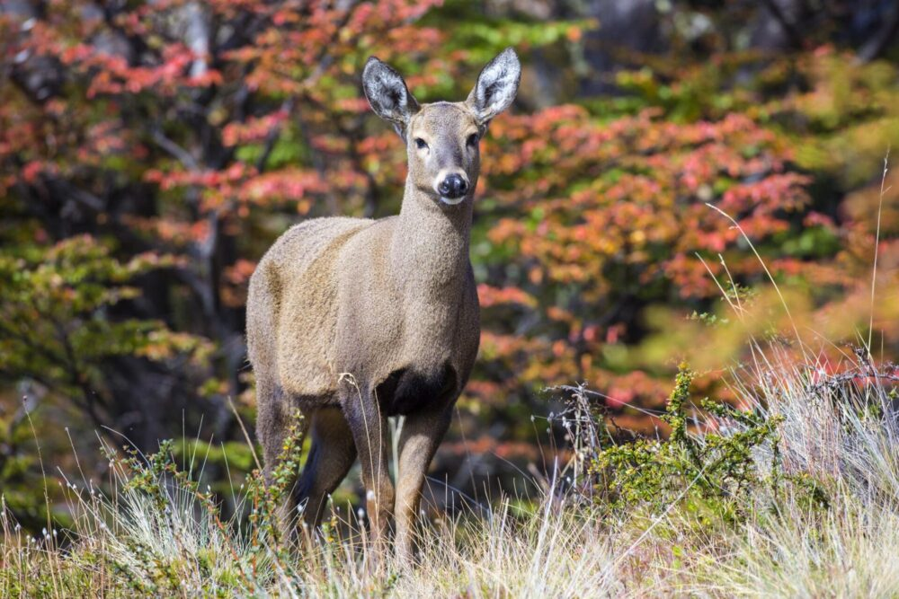
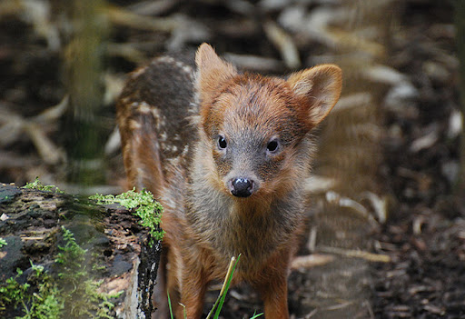
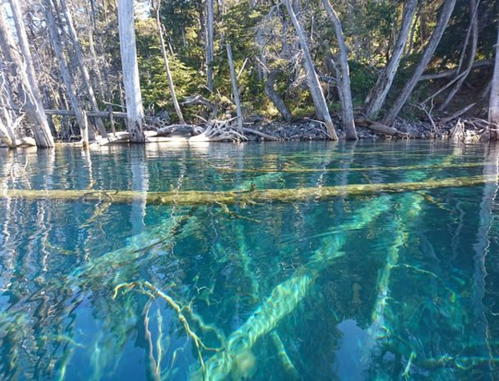
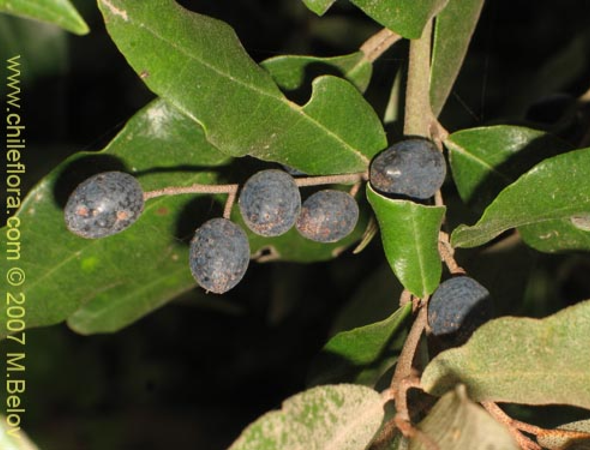

Fauna

Chucoa
El chucao (Scelorchilus rubecula) habita entre la vegetación densa del bosque. Acostumbra correr entre las ramas y hojarasca del suelo. Cuando se posa, lleva la cola levantada. Emite un sonido muy potente, que se escucha a gran distancia. Se alimenta con pequeños insectos que captura con su pico entre la vegetación.

Zorro Colorado
Presenta el aspecto característico de todos los zorros. Su pelaje es bastante largo y denso; en las zonas donde las estaciones climáticas son muy marcadas es más largo aún. En la parte superior de la cabeza los pelos pueden ser de color oscuro y se entremezclan con los pelos de color rojizo.

Huemul
El huemul es un ciervo adaptado a la vida de montaña, de estructura robusta, miembros cortos y fuertes. Alcanza cerca del metro de altura (a la cruz) en los ejemplares mayores, y un peso de 70 a 90 kg. Los machos adultos se diferencian de las hembras porque alcanzan un mayor tamaño y peso.

Pudu
Es uno de los ciervos más pequeños del mundo. No supera los 40 cm de altura, ni los 10 kg de peso. Posee un pelaje grueso y denso de color café rojizo oscuro. Es en general un animal tímido y huidizo, que se oculta entre la vgetación, y que vive en forma solitaria o grupos de no más de tres individuos.
Flora

Luma apiculata
Su corteza es de color castaño cuando el árbol es joven y anaranjado cuando es adulto; está cubierta por una capa de textura pilosa y sedosa que se desprende al contacto.
Sus hojas son simples, de forma redonda u ovalada; brillantes por el haz y terminadas en una espícula o mucrón, verde oscuro en la cara superior y claro en la inferior, coriáceas.

Lingue
Gevuina avellana es la única especie del género Gevuina, de la familia Proteaceae. La especie se conoce con los nombres vulgares de avellano o avellano chileno2 y es un árbol perenne monoico. Crece en los bosques templados de Chile, entre los 35° y los 44° de latitud Sur

Gaultheria insana
Es un árbol muy elegante con un tronco grueso y copa amplia y puede llegar a tener más de 40 m de alto. Florece en febrero y marzo, según la latitud y la altitud. Sus flores de color blanco-marfil contienen un muy apreciado néctar aromático para la fabricación de miel. El fruto es una cápsula de aproximadamente 1,5 cm de longitud.

Austrocedrus chilensis
Es un árbol de crecimiento lento pero con buena regeneración y resistencia. Ha sido plantado en la costa norte del Pacífico de los Estados Unidos.2 En condiciones naturales su plantación tiene éxito únicamente bajo algún tipo de cobertura arbórea o arbustiva que la proteja del estrés por déficit hídrico en situaciones de total exposición al sol.